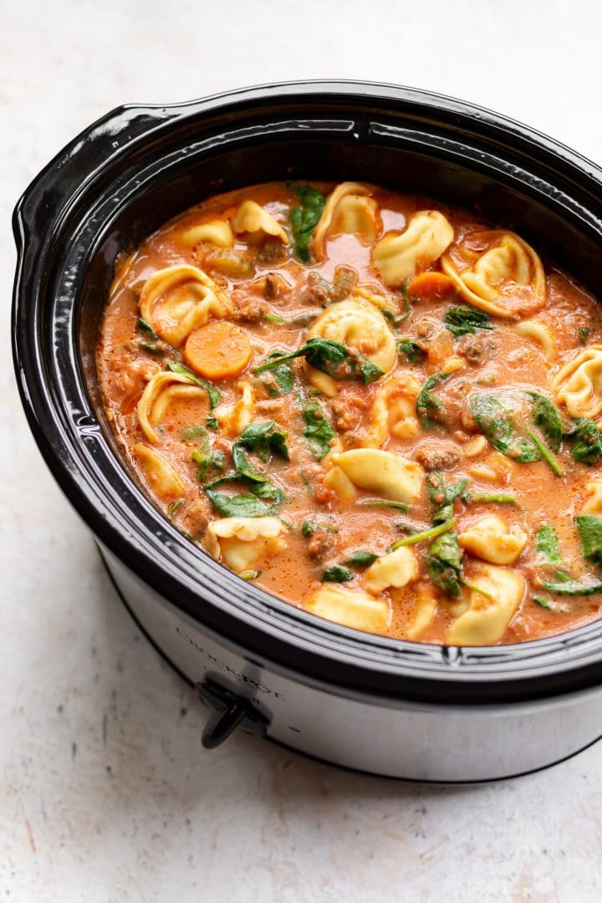

The Soup

Description
The soup is a tortellini, spinach, creamy tomato and chicken soup popularised by Reddit.
The soup requires a slow cooker, and the original recipe contains meat, however this version has options for vegetarians.
Ingredients
- 1 medium white onion, diced
- 40g cup plain flour
- 1 tbsp dried basil
- 2 cloves garlic, minced
- 2 tbsp tomato puree
- 1 litre vegetable broth (note: orignal uses chicken broth)
- 2 cans chopped tomatoes
- 500g vegan chicken substitute (e.g. Quorn Chicken Pieces), jackfruit or tofu
- 1 tsp salt
- 1/2 tsp pepper
- 1-2 packs cheese tortellini (frozen or fresh)
- 1 medium pack raw spinach, washed
- 200g Parmesan cheese, grated
- 240ml double cream
Method
- Mix onion, flour, basil, garlic, tomato paste and a drizle of olive oil in a microwavable bowl.
- Microwave the mixture for 5 minutes, stirring every 90 seconds.
- Optional: dry fry chicken substitute to remove moisture, especially if frozen.
- Add the mixture, as well as the broth, tomatoes, chicken substitute, salt and pepper to the slow cooker and stir together.
- Cover and cook on Low for 4-6 hours, or High for 3-4 hours.
- Add tortelli, spinach, Parmesan cheese and pre-warmed cream (this is to avoid curdling)
- Cook on High for about ten minutes.
- Serve and enjoy!
Homepage